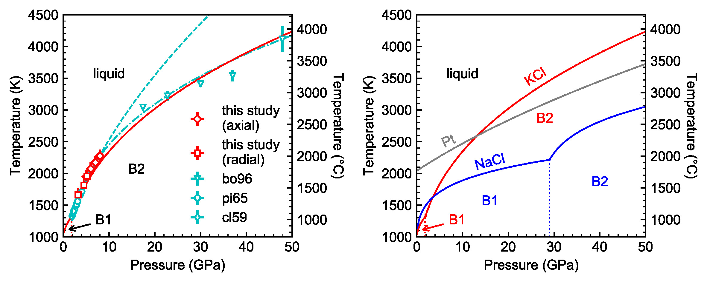

|
ABSTRACT
We report experimental constraints on the melting curve of potassium chloride (KCl) between 3.2 and 9 GPa from in situ ionic conduction measurements using a multi-anvil apparatus. On the basis of concurrent measurements of KCl and sodium chloride (NaCl) at 1 bar using the differential thermal analysis (DTA) method and Pt sphere marker, we show that the peak rate of increase in ionic current with temperature upon heating coincides with latent-heat ledge and fall of Pt sphere, thus establishing the criterion for melting detection from ionic conduction measurements. Applying this criterion to high pressures, we found that the melting point of KCl rose steeply with increasing pressure to exceed 2400±100 K at 9 GPa. Fitting the results of this study together with existing data at pressures below 4 GPa and above 20 GPa, we obtained the Simon's melting equation for KCl in the simple cubic B2 structure between 1.8 and 50 GPa: })^{\frac{1}{2.7(1)}}}) , where T is in K and P is in GPa. Starting at 1 bar, the melting point of KCl increases at an average rate of ~150 K/GPa to cross that of Pt near 9 GPa. The highly refractory nature of KCl makes it a sensitive pressure calibrant for the large-volume pressure at moderate pressures and a potential sample container for experiments at moderate pressures and very high temperatures. , where T is in K and P is in GPa. Starting at 1 bar, the melting point of KCl increases at an average rate of ~150 K/GPa to cross that of Pt near 9 GPa. The highly refractory nature of KCl makes it a sensitive pressure calibrant for the large-volume pressure at moderate pressures and a potential sample container for experiments at moderate pressures and very high temperatures.

|